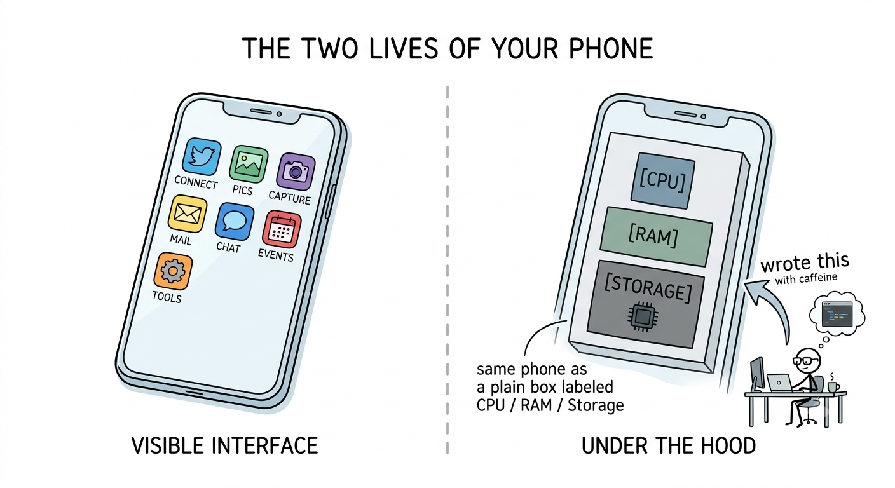
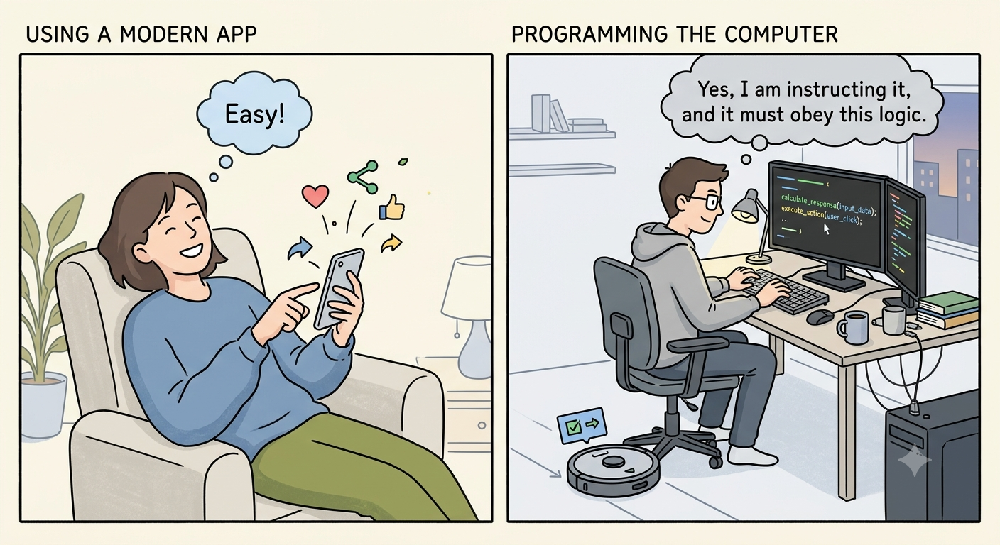
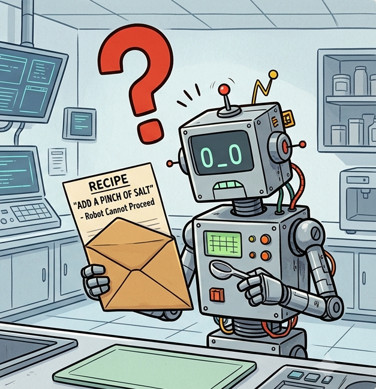
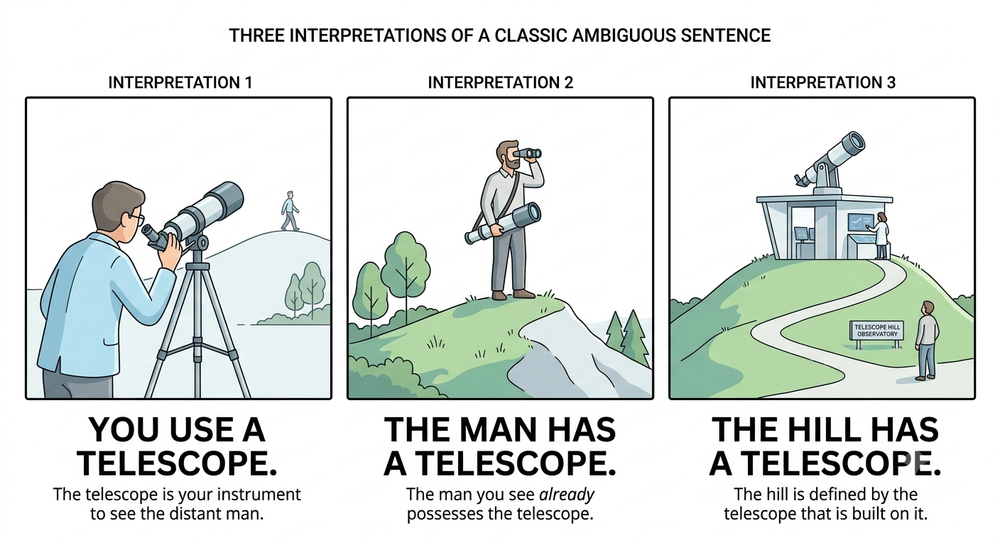

A computer is a machine built around three things:
Part
What it does
CPU
The brain — fetches and executes instructions, billions per second
Memory (RAM)
The scratch pad — fast, but gone when the power goes off
Storage
The filing cabinet — slow, but permanent
Everything else — keyboard, screen, WiFi — is just input and output.
Your Phone Is Also a Computer
Under the hood, your phone has a CPU, RAM, and storage.
It is a computer — manufacturers just hide the machinery behind apps.
Think about every app on your phone:
The alarm app
The maps app
The game you play on the bus
The on-screen keyboard
Your Phone Is Also a Computer
Every one of these was written by a programmer who sat down and wrote instructions, one line at a time.
That is what you are learning to do.

Two Ways to Use a Computer

Two Ways to Use a Computer
Using a Computer
Open an app → it runs
Click a button → something happens
Someone else wrote those instructions
You follow the rules someone else set
Programming a Computer
You write the instructions
The computer does exactly what you say
You set the rules
(Whether or not that’s what you meant is another story)
Most people use computers. This course teaches you to program them.
What Is a Program?
A program is a precise, ordered sequence of instructions for a computer.
The best analogy: a recipe.
Recipe
Program
Ingredients
Data — numbers, text, …
Steps
Instructions
Cook
CPU
Finished dish
Output
A recipe tells a cook exactly what to do. A program tells a CPU exactly what to do.
What Is a Program?
Programming Is Like Mailing a Recipe
Imagine you’re cooking something following a recipe:
Something unclear? Improvise. Ask a friend. Use judgment.
Now imagine giving that recipe to a friend who is going camping for a few days and has no internet or phone:
They follow only what is written
They cannot call you mid-cook
“Add salt to taste” → useless. How much?
Every step must be complete and unambiguous
Programs as recipes
A program is a recipe - the computer opens the envelope and follows the instructions exactly.
No improvising, no common sense, no filling in gaps.

{fig-alt=“robot/computer holding an open envelope with a recipe inside that says”add a pinch of salt” — robot has a large “?” above its head and cannot proceed.”}
Why Can’t Computers Just Understand English?
English is beautifully ambiguous:
“I saw a man on a hill with a telescope.”

Why Can’t Computers Just Understand English?
Humans resolve ambiguity with context, tone, and common sense.
Computers have none of these.
Programming languages are designed so every statement has exactly one meaning.
That is why they look the way they do — no shortcuts, no “you know what I mean.”
Learning a New Language
Programming is genuinely like learning a new language:
Vocabulary: small — a few dozen keywords in Java
Grammar: absolute — one wrong character breaks everything
Accent: none allowed — spelling, capitalization, and punctuation are all exact
But like any language, you don’t learn it by reading about it.
You learn it by using it — making mistakes, getting confused, and practicing until it clicks.
Important
The in-class worksheets and homework are not optional extras. They are the practice reps. You cannot get fluent by watching someone else do it.
What About AI?
Yes — AI tools can write code. Sometimes very well.
So why aren’t you allowed to use them in this course?
The same reason you learned long division before using a calculator:
Understanding why the code works is what makes you a programmer.
AI can hand you a correct answer without you understanding a thing. That works great — until:
You need to modify the code
Something breaks and you have to debug it
You sit down for an exam
Warning
AI use on assignments and tests is not allowed. This is not because AI is bad — it is a powerful tool you will likely use in your career. But right now, you need to build the skills. The reps matter.
Your First Java Program
voidmain(){ IO.println("Hello, World!");}
Every piece has a job:
Piece
What it means
void main()
“Start here when the program runs”
{ }
Curly braces wrap a block of code
IO.println(...)
Print a line to the screen
"Hello, World!"
The text to print — always in double quotes
;
End of statement (like a period at the end of a sentence)
What the Computer “Hears”
// What you type: // What the computer hears:voidmain(){// "Dear Computer," IO.println("Hello");// "Please print 'Hello' on the screen."}// "Thanks and regards, Programmer"
The computer is completely literal. It does precisely what you wrote.
Miss a semicolon — error. Write Println instead of println — error. Forget a closing brace — error.
Programming feels hard at first because you are learning to think like someone with no common sense whatsoever.
In this course, indentation is required. Write readable code from day one — your future self will thank you.
Comments — Notes for Humans
A comment is a note you write inside your code.
The computer ignores it completely. It is there for the human reading the code.
voidmain(){// This program greets the user. IO.println("Hello, World!");// prints a greeting to the screen}
Everything after // on a line is a comment — it has no effect on what the program does.
Why write comments?
To explain what a piece of code is doing
To explain why you made a particular choice
To leave a note for yourself when you come back to the code later
To communicate with your professor and grader
In this course, many assignments will ask you to explain your reasoning in comments. The grader reads them. A correct program with no comments is less valuable than one that shows you understood what you were doing.
A good comment explains intent — not just what the code says:
// BAD — just repeats what the code already saysIO.println("Hello");// prints Hello// GOOD — explains why this line is hereIO.println("Hello");// greeting displayed before asking for the user's name
Tip
Java also has multi-line comments: /* anything here */. We will mostly use // — one line at a time is clearer and easier to maintain.
The computer runs line 2, then line 3, then line 4. Always, in that order.
Note
Later in this course, we will learn to make programs jump (conditionals), repeat (loops), and call other code (methods). But the default is always: one step at a time, top to bottom, just like following a recipe.
Worksheet
Problem 1 — Trace it. What does this program print? Work through it line by line before running it.
Comments — Notes for Humans
A comment is a note you write inside your code.
The computer ignores it completely. It is there for the human reading the code.
Everything after
//on a line is a comment — it has no effect on what the program does.